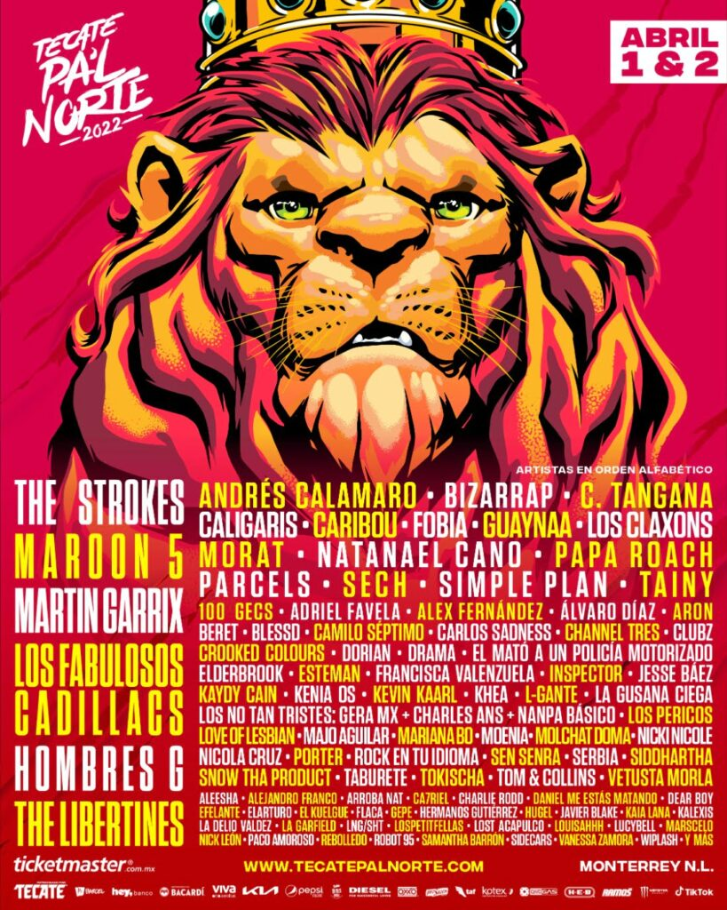
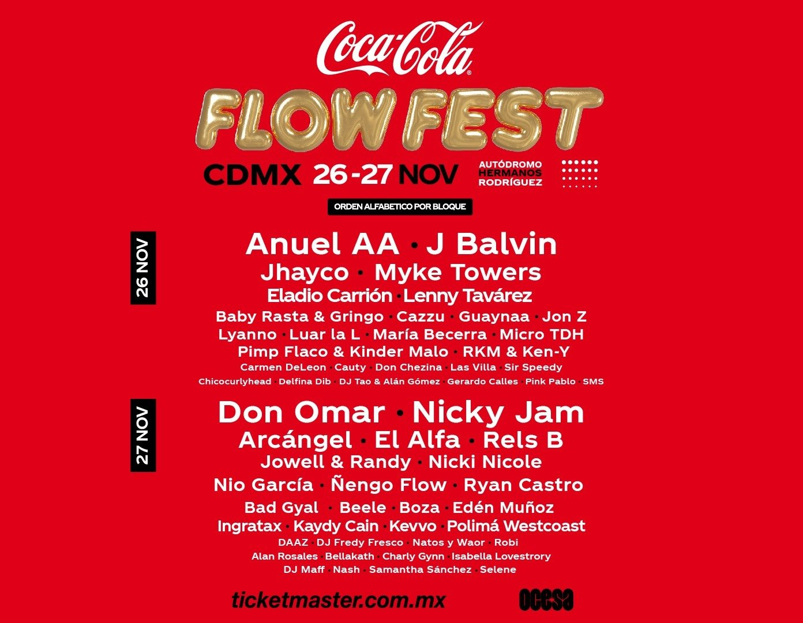
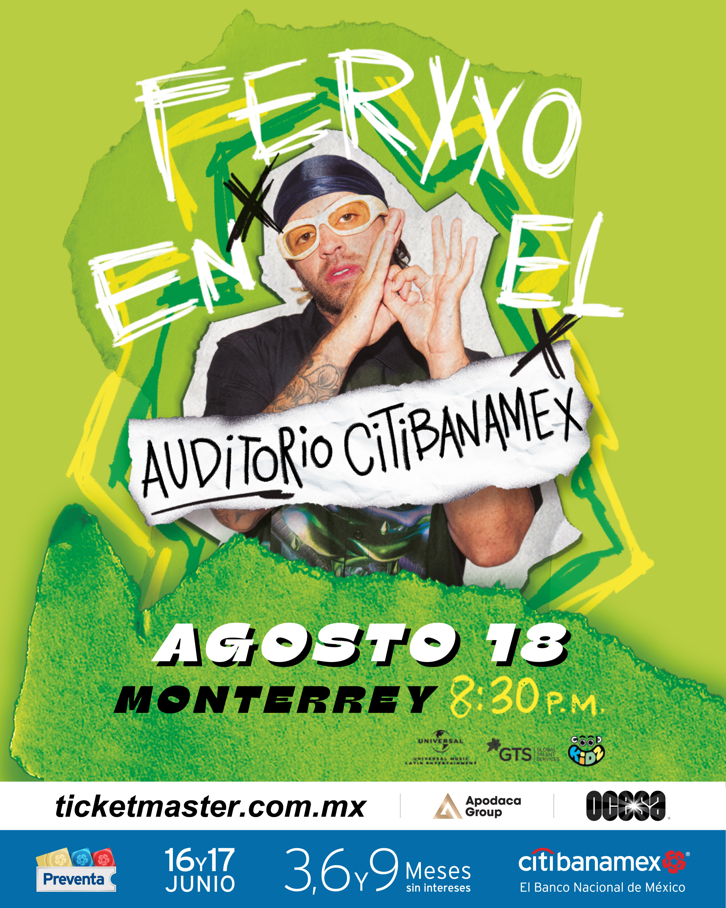

Festivales de Música

El puertorriqueño Álvaro Díaz es reguetonero, rapero o 'trapero',
una de las figuras más prometedoras de la escena urbana en español.

La oferta musical que ofrece el evento es totalmente variada y para todos los gustos.

La revoltura musical al estilo Machaca es inmensa, ya que encontraremos Pop, Cumbia, Rap, Ska y Metal Alternativo, entre otros.

Pa'l Norte celebra el Rock latino y la música norteña.

El Coca Cola Flow Fest 2022, uno de los festivales más grandes de música urbana en Latinoamérica, el festival de reggaetón.

FERXXO, cantante y compositor colombiano de música urbana y reggaeton.

Daniel Heredia Vidal, mejor conocido como Rels B, es un cantante y compositor exponente del género del rap y hip hop.

El canadiense Justin Bieber es un cantante de Pop R&B hip-hop dance.